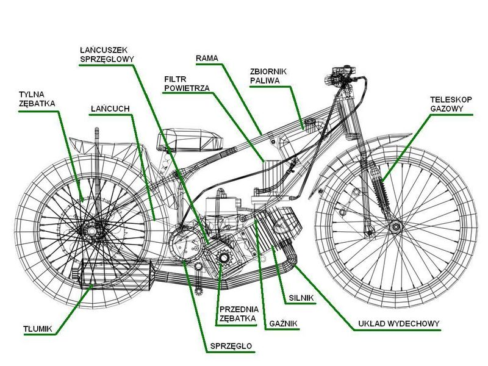

Sprzęt Żużlowy
Motocykl żużlowy to wysoce wyspecjalizowana maszyna, zaprojektowana do maksymalnych osiągów na owalnym torze. Brak hamulców i specjalna konstrukcja sprawiają, że jest to jeden z najbardziej unikalnych pojazdów w sporcie motorowym.
Motocykl Żużlowy: Kluczowe Elementy
- **Silnik:** Najważniejszy element. Najczęściej są to jednocylindrowe silniki czterosuwowe o pojemności 500 cm³ i mocy około 70-80 KM. Dominujące marki to Jawa (czeska) i GM (włoska). Silniki są przystosowane do pracy na metanolu, co zapewnia większą moc i czystość spalania.
- **Rama:** Lekka i wytrzymała rama, często wykonana ze stali chromowo-molibdenowej, która musi wytrzymać ogromne przeciążenia podczas jazdy w poślizgu.
- **Skrzynia Biegów:** Motocykle żużlowe posiadają jednobiegową skrzynię biegów (bez neutralnego), co oznacza, że zawodnik startuje z biegu, a podczas jazdy nie zmienia przełożeń.
- **Brak Hamulców:** To jeden z najbardziej charakterystycznych elementów. Zawodnicy kontrolują prędkość i poślizg wyłącznie za pomocą balansu ciałem, gazu i specyficznej techniki jazdy.
- **Sprzęgło:** Bardzo ważne podczas startu. Musi zapewnić płynne i szybkie ruszenie, aby zawodnik mógł wywalczyć najlepszą pozycję na pierwszym łuku.
- **Zawieszenie:** Uproszczone w porównaniu do innych motocykli. Z przodu amortyzatory teleskopowe, z tyłu zazwyczaj jeden amortyzator sprężynowy. Nie ma to na celu komfortu, a jedynie utrzymanie kontaktu koła z nawierzchnią.
- **Opony:** Specjalne opony z rzeźbą bieżnika przystosowaną do nawierzchni żużlowej, zapewniające maksymalną przyczepność w poślizgu.
- **Gaźnik:** Dostosowany do spalania metanolu, kluczowy dla precyzyjnego sterowania mocą silnika.
- **Układ Wydechowy:** Krótki i prosty, zaprojektowany tak, aby minimalizować opory i zapewniać optymalne osiągi silnika.
Osprzęt Zawodnika
Oprócz motocykla, kluczowe jest również odpowiednie wyposażenie ochronne zawodnika, które zapewnia bezpieczeństwo w dynamicznym i ryzykownym sporcie.
- **Kask:** Pełnowymiarowy, homologowany kask, który chroni głowę zawodnika przed uderzeniami.
- **Gogle:** Chronią oczy przed żużlem, pyłem i kamieniami.
- **Kombinezon:** Wytrzymały, skórzany kombinezon, często wzmocniony na łokciach i kolanach, zapewniający ochronę przed otarciami w razie upadku.
- **Ochraniacze:** Specjalne ochraniacze klatki piersiowej, pleców, łokci, kolan i bioder, często wykonane z zaawansowanych materiałów absorbujących uderzenia.
- **Buty żużlowe:** Wysokie, wzmocnione buty, często z elementami ślizgowymi na podeszwie prawego buta, ułatwiającymi jazdę w poślizgu.
- **Rękawice:** Chronią dłonie i zapewniają pewny chwyt kierownicy.
Każdy element sprzętu jest dokładnie sprawdzany pod kątem bezpieczeństwa i zgodności z przepisami, aby zapewnić jak największe bezpieczeństwo zawodników.